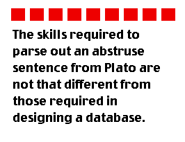
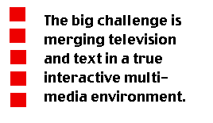
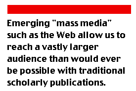

In an age of instant messaging, global communications and electronic publishing, few things would seem more distant than the worlds of ancient Greek and Rome. For centuries the study of Greek and Latin literature occupied a central place in European education, but the rising status of the sciences and technology in the last century and a half have been matched by a decline of the classics. However, some of the most impressive sites on the Web are devoted to the classics, and among the medium's most thoughtful commentators are current and former classicists: clearly there is no simple inverse relationship between these examples of the "two cultures".
In this issue, First Monday Contributing Editor Alex Soojung-Kim Pang interviews two classicists notable for their work online. James O'Donnell is a professor of Classical Studies at the University of Pennsylvania, the author of books on Cassiodorus, Boethius, and Augustine, and most recently Avatars of the Word: From Papyrus to Cyberspace (Cambridge, Mass.: Harvard University Press, 1998). He is also editor of the Bryn Mawr Classical Review, and is Vice Provost for Information Systems and Computing at Penn. Gregory Crane is editor-in-chief of the Perseus Project, a prize-winning online archive of classical resources hosted by Tufts University. The conversation, conducted via e-mail during December 1998, ranged from the influence of the classics on computing, to the Perseus Project and Avatars of the Word, to the impact of computing on the classics.
Origin Stories
First Monday (FM): It makes sense to start by asking each of you a little about your scholarly background, and how your current online projects developed.
James O'Donnell (JO'D): I start out with no techno-fear: my childhood years were spent at White Sands Missile Range (near Las Cruces, New Mexico) surrounded by adults who were using technology to do things no human beings had ever done before. To me, that's the default mode. I had been around the edges of computer culture at a couple of odd times in college (typing a vast dissertation, working one summer for the government), but took no interest. But when I first heard about a "word processor" I knew that I needed one to do my day job better. I was right. I like to shock young students now by telling them of the old days of "typing papers" and recalling the days when I was first teaching and got up an hour early every morning for two months to type a clean copy of my first book to submit for a publisher. If I'd had a decent PC from the time I was 21, I like to say I'd be two years younger than I am today.
I fell into the Net in 1989 when I had to buy a modem in order to connect to a specialized database of Latin texts on a mainframe at Villanova, and then started doing e-mail, in the glory days of the Humanist list run by Willard McCarty-- for its brief shining moment the liveliest intellectual salon I've known. It was inspiring, and it inspired me to try stuff: BMCR (Bryn Mawr Classical Review) was the first fumbling and glorious experiment.
Gregory Crane (GC): I began working on computers in 1982 when, as a third year graduate student, I heard that the department wanted to get access to the Thesaurus Linguae Graecae, an early digital library project that had placed on-line and distributed (on magnetic tape) a staggering 80 mbytes of Greek text. I started out by burning hand-coded fonts into EPROMs and ended up developing a multilingual full text retrieval system in C on the Unix operating system. We did a lot of work, ranging from writing code in whatever language seemed best to running cables through steam tunnels, trying to get the basic infrastructure in place. I still get queasy thinking about how to get device drivers to send 8 bit characters to primitive dot matrix printers that could only manage 7 bits reliably. I love the technical side of computing as much as I love the details of Greek: chaos and elegance intermix in each, each paradoxically enhancing the other.
When I became an assistant professor in 1985, I collaborated with some other classicists to start work on what would become the Perseus Project. I wrote the first preliminary proposal (which resulted in an equipment grant from Xerox) before I had finished my Ph.D. and wrote the first preliminary proposal to the Annenberg/CPB Project in my first week as a faculty member. At the time, we had a dim sense of what a heterogeneous digital library might look like. We wanted to link every category of data that we used in print form in an electronic environment and then to see what would happen. We hoped that we would change the questions that people would ask: [that] the literature people would use more images, while the art and archaeology researchers might make better use of Greek texts.
Computers and Classics
FM: Most people have no trouble thinking of astronomers and physicists embracing the Web; but classicists? To outsiders, that seems odd, or at least it isn't self-evident how a classical training would lead to heavy-duty Web work. What is the history of classicists using computers in their work? Into what parts of classical scholarship have they been accepted and are used regularly (not just for word processing or e-mail)? Or are the roots of your current online interests mainly (or entirely) personal?

GC: The skills required to parse out an abstruse sentence from Plato are not that different from those required in designing a database or a multimedia application: you need to keep a lot of details under control (a Greek verb can, when its prefixes are taken into consideration, assume millions of different forms) while at the same time trying to keep the big picture in view as you wade through a page long sentence on some abstruse theory. Classics is a wonderful discipline because it allows you to think about truth and beauty in Sophocles or realism in Thucydides or scandalous humor in Aristophanes while forcing you to deal with the technical realities of Greek.
While we have, for all practical purposes of data storage and computation, an infinite amount of art and archaeological materials, the corpus of Greek and Roman texts that survives is relatively small -- well under a gigabyte by any estimate. We do very precise work on a fairly constrained corpus and data manipulation tools are very important to us. Traditionally classicists were best rewarded for creating editions (which tried to sort out the errors that had crept into texts copied by hand for generations) or commentaries and other reference works. Consider the rise of consistent reference schemes. The text string "Thuc. 2.41" is, within the field of classics, a hypertext link pointing to book 2, chapter 41 of Thucydides' History of the Peloponnesian War. Electronic systems that make such links dynamic are new (and their consequences will be profound), but hypertext is the traditional medium of true academic publication. To a very great extent, computers allow us to do what we have always wanted to do: make connections between source materials.
JO'D: Look, classicists are very self-conscious about how they process their information and very conscious about the history of modes of communication. Who else is going to be interested in these things?
FM: But that self-consciousness is something that LOTS of humanists would claim these days: anyone who has made (or survived) the "linguistic turn" is going to make it. I still wonder if there's something more specific to the study of the classics that explains why there are more of you online than, say, historians of early modern France.
JO'D: The "history of the book" is hot now, and those folks are interested in cyberspace, but people who deal with the history of written but not printed culture have had their noses rubbed in the media themselves far more than most modernists. We also have the advantage of a limited canon of classical texts and that Thesaurus Linguae Graecae that Greg spoke of: contingent facts to get us going. The arrival of the Macintosh in 1984 was for many the moment when it became possible to process Greek characters fluently (a real need) and that got a lot of people thinking about these gadgets fairly early on.
FM: Some scholars have reported having trouble convincing their peers that electronic publications should be considered in promotions, or that they can be serious intellectual enterprises. How have your colleagues and institutions viewed your electronic work?
GC: A decade ago, Derek Bok (then president of Harvard) stated bluntly that the medium of publication was irrelevant. It was the quality of ideas that mattered. Nowadays, the big issue is peer review. If your work has gotten that imprimatur, then the medium should be irrelevant. If someone came up for tenure at Tufts with an electronic book, I can state with confidence that his or her case would be evaluated on the content of that book. That means no demerits for innovation but no points for simply doing the flashy thing.
JO'D: All that I've done I've done since promotion to full professor. I've been a poster child to my institution in several ways, in several ways treated by my institution as by a puzzled proud parent not quite understanding what the kid is up to. But then in 1996, I become chief information officer for the University of Pennsylvania: that's pretty positive recognition, I have to admit.
GC: From a practical point of view, my colleague Ross Scaife, a tenured classicist at the University of Kentucky, and I are co-directors in a project trying to jump start the process of electronic publication. We know how to do peer review but we don't know how to design good electronic documents that will be useful with minimal added effort over a long period of time. Electronic publication forces us to rethink everything we do. I honestly don't know any more how best to organize even a dictionary entry. When you consider the problem of publishing an archaeological report (which may include a 3D visualization of a vanished space) the problems become particularly interesting.
FM: Much ink has been spilled (and many electrons zipped around) over the question of whether the Web and electronic publishing will lead to the end of the book, the death of the author, etc.. What do you think of these claims?
JO'D: They keep people, who might otherwise meddle in serious matters, busy.
GC: The prevalence of print matter is deceptive because books simply aren't what they were. A generation ago, the book was the prime medium in which to store information. Now a book is a deluxe printout of an electronic file and it is the file that is the prime medium in which to store information. Printed pages are the output of electronic information and they are thus logical subsets of the electronic data. Already, if we follow the Text Encoding Initiative Guidelines for SGML markup, we can create documents far richer and more flexible than is possible for any print book. The electronic documents are more flexible and can support more different types of use than can print. In Greek, for example, we are now to the point where we can have a single lexicon for students working through their first Greek and scholars doing advanced research; we simply apply different filters to the same electronic data. There are a lot of benefits to this: the larger market makes it easier to maintain the unified resource, the scholars get a better interface, the students get access to richer more up-to-date data.
The problem that we face is that our infrastructure is still print based. Publishers and librarians are much more comfortable with print. People still view the paper product as the archival publication, when in fact they should be focused on the electronic files. A decade from now I don't think that anyone will be able to understand how we could have been so shortsighted as to be creating standard typesetting files at the turn of the millennium when we really need truly electronic documents in formats like SGML. In a field like classics, where we value texts and commentaries, its horrible to watch major scholarly works appear in print and to realize that it will take a huge amount of work to retrofit those works into anything approaching their optimal electronic form.
In part, the problem is that we don't really know how best to design electronic documents. Its obvious that we don't really know yet how best to do really new things: how do you publish an archaeological site which includes a 3D visualization of a vanished space linked to a database with thousands of finds? But we don't even know how to design traditional tools such as dictionaries, grammars and commentaries anymore. A lot of our effort goes into exploring new formats for traditional and non-traditional types of publications. (See, for example, the Stoa Publishing Consortium)
FM: Are there lessons from either the history of the classical world, or the study of the classical world (i.e. the scholarly enterprise that both of you are engaged in), that can throw light on the current arguments over the future of the book, the library, literate culture, etc.?
JO'D: It's Marshall McLuhan's old lesson: the content of a new medium is an old medium. What we do with new gadgets is what we wanted to do with the old ones. It takes a long time for us to slow down and pay attention to what the new gadgets can really do, and longer to take real advantage of them. We haven't begun to inhabit cyberspace yet: we're still in an electronic annex to the suburban row houses we grew up in.
GC: The Homeric Epics reflect a tradition of oral poetry: formulaic composition shapes the individual lines of poetry and the overall structure of scenes and of the epics themselves. Whether or not the poems that we have were composed with the aid of writing, they reflect a mode of composition that preceded writing. Writing certainly preserved the Iliad [available in the original Greek on the Perseus Web site] and the Odyssey [also available at Perseus] but writing also killed the oral poetic tradition from which these epics sprang. The Iliad and the Odyssey are literary fossils, preserved and given life by the very technology that killed the world of which they were a product.
The fate of the Iliad and Odyssey are instructive. New forms of information technology change the shape of cultural production: the novel could not become dominant till you could print cheaply, while the staggering influence of film, video and sound depend upon an array of technologies. At the same time, the examples of the Iliad and the Odyssey tell us a lot about what does and does not change. Our material powers are vastly greater than they were when these poems assumed their current shape, but the Iliad and Odyssey remain unsurpassed as successful works of art, capable of attracting generation after generation of intense interest. Oral poetry may have ended up as fossilized remains in the IT tar pits, but writing gave us Greek tragedy and Plato. We will still study Homer a thousand years from now, as we will twentieth century American films.
The Perseus Project
FM: How big is Perseus? How many people have worked on it?
GC: I could not give you an accurate count. Contributors range from people who review pieces written for us to students working part time to full time professionals. This year we have a fairly large staff: we have one programmer, one image person, a full time project manager, a text editor/documentation writer and three post docs besides five grad students working on long term projects. The staff varies widely, though, depending on what projects we are pursuing in a given year.
FM: Most social scientists or humanists conduct their research alone. How does the character of work on Perseus compare to that of more traditional scholarship? Is the Perseus shop floor more collaborative? If so, has that presented challenges for you and your group?
GC: We work very much like a Renaissance print shop or a start up company. Roles are blurred and people do many kinds of work. My job as "Editor-in-Chief" is to match the needs of the project to the strengths and interests of its participants. This is usually not very difficult to do because they are far more projects to pursue than we have people and we can usually find ways to help people work with themselves and each other.
In a mature digital environment, the line between collaboration and individual work is blurred, as it is academic publication. I may write a book "myself," but the book is packed with references to primary sources and to other books. My book cannot be successful as a publication unless it follows the rules of the game and collaborates with the books and published ideas of many other people. A digital library project works in much the same way. People have to follow shared conventions but if they do then can create their own little modules, each of which gains value when being linked to the larger digital library.
FM: What role do graduate students and undergraduates play in the project? Have you had visiting faculty come to Perseus to pick up some technical skills?
GC: We see ourselves as contributing in two basic ways. On the one hand, we produce what we hope to be useful electronic documents and tools. On the other hand, the projects that we undertake serve as training grounds for younger scholars, allowing them to familiarize themselves with the possibilities (and limitations of the new medium). The "Perseus alumni" are already arguably a substantial contribution, since these are scholars whose abilities have been permanently enhanced by their work with us in the past. Its not just technical details but the ability to synthesize the possibilities of the technology with the aspirations of scholarship and teaching.
FM: Some of the more impressive features of the site include material from other institutions -- art museums, for example. How have those relationships developed? Have you had to pursue associations, have museums come to you? What kinds of issues or concerns do other institutions have (e.g. copyright) that need to be settled before a project can start?
GC: We develop collaborative relationships with varying institutions in a variety of ways. Its really a question of whether we have something in common or a way to work together productively. At the moment, we are collaborating with, among others, the Museum of Fine Arts, the Max Planck Institute for the History of Science in Berlin, the Modern Language Assocation's New Variorum Shakespeare series and the special collections departments at Penn, Brandeis and Tufts. Personally, I find the opportunity to work with such a diverse body of institutions to be one of the greatest attractions of being involved with Perseus.
FM: How have people (students, teachers, scholars) used Perseus' resources? Has user feedback influenced its work or priorities?
GC: Perseus was designed, at least initially, to provide the infrastructure on which others could build. We decided not to provide finished curricula or scholarly essays so much as the tools on which others could build. We have worked hard to provide the tools that people can use (and that we are able to create). We spend a lot of time analyzing our e-mail and are making ever greater use of our Web access logs. (The volume of the latter is substantial - we are receiving more than 100,000 visits per day, which gives us lots of information but is also challenging to analyze well).
FM: Where do want to take Perseus in the next several years? What would you like it to become?

GC: We are interested in the general problem of designing digital libraries for the humanities. We have begun expanding beyond antiquity, with projects on the Renaissance, on 19th Century London, musicology and other areas. We are especially interested in exploring the ways to tie DVD (or whatever emerges as the dominant digital video format) to other resources. We want to study how you could create a digital edition of, say, "Spartacus," in which you would link the Kubrick movie to historical novel by Howard Fast and to a digital library of sources on ancient slavery-- a real library, not just expanded "liner notes." The big challenge is merging television and text in a true interactive multimedia environment, one that combines the attraction of video with the exploratory possibilities of hypertext and the depth of a research library. The goal is to help the general public explore their own interests in an extended and enriching fashion, breaking down the barriers that now isolate them from the ideas and materials that we have in the university.
Avatars of the Word
FM: Can you say a little about the origins of this project and its scope? And what does the title of the book mean?
JO'D: By "avatars" I understand the different material forms immaterial powers assume to do their work in the world. The spoken/thought/written word is one of those powers and through the centuries it has worked through numerous media. I was hinting at the power of the underlying discourse, and at the versatility of its manifestations.
FM: It seems to me that you make the case for the book serving as a kind of "appropriate technology" for early Christians. In particular, it was valuable because it could be easily transported and hidden, and could be made from local materials (rather than papyrus, which only grew in Egypt). This raises two questions: First, do you think that electronic publishing (or online culture more generally) might be used by religions today in certain ways-- in missionary efforts perhaps, or to assist persecuted religious groups, say? Second, the close association between books and Christianity make me wonder: who plays the role in today's electronic world of the early Christians?
JO'D: Good questions. I don't see religions using the new techniques any more or any less responsibly or creatively than other groups. My guess is that real creation will come from today's marginalized societies. I have just heard, e.g., of native peoples in Australia using video teleconferencing to "gather" to perform their native rituals. That's not the religion so much as it is the people finding unity and community that's hard for them to get at otherwise. Wait till this stuff gets widely used in Latin America and in India and in China: then hold on to your hats.
FM: One of the most interesting chapters in Avatars of the Word is "Augustine Today," which talks about how the use of the Internet and World Wide Web would affect scholarship about Augustine. Are these kinds of impacts already making themselves felt in classical scholarship, or some specialty within it, making certain kinds of information easier to share or access, making possible (or much easier) new types of research?
JO'D: It's early days to tell, but I just had a freshman in my living room working on a King Lear paper and revising it frantically as a result of on-line conversations with friends in Illinois and New Hampshire. I envy him acutely, because in college I was limited to the people I actually knew who lived within a few hundred yards of me. The old-fashioned face-to-face college or university is in many ways primitive.
FM: There's one reference (that I recall) in Avatars to your work on the BMCR; and the only mention I could find of your life as Vice Provost for Information Systems and Computing at Penn was on the book jacket. Yet I had the sense while reading Avatars that both experiences have affected the way you think about the relationship between technological change and the life of the mind. Some of your ideas and perspective seem like those of a person who's grappled with the practical problems of taking ideas and making them into HTML or SGML. Can you say something about what your work as an editor and provost contributed to the book? And if they have been significant, what made you decide not to say more about them?
JO'D: The book mostly predates my provosting, and now as I reread it I think, "oh, dear, this is, like, so 1995". It's a very conservative book. But what my vice-provosting has given me is mainly a deeper understanding of the social structures within which academics use computing technologies and the challenges of matching resources to dreams inside institutional structures that are fundamentally conservative.
FM: So what would a second edition of Avatars say that's new?
JO'D: It would address the rampant commercialization of cyberspace and the slow pace of institutional change in the not-for-profit world.
FM: I noticed that you wrote a review of your book on Amazon.com. Recently there was an article about authors visiting the site to see how popular their books are (Amazon keeps a running tally of book sales). Have you succumbed to that particular temptation? More seriously, have electronic venues like Amazon.com brought you into contact with readers in new ways?
JO'D: The Amazon numbers are fun but hard to take seriously. But sure, Amazon.com and the Web bring me lots of conversations that I would never have had before.
Classics and Computers II
FM: Reading Avatars of the Word and other works that put the development of new media in a kind of deep historical perspective (e.g. Kilgour's Evolution of the Book, Hobart and Schiffman's Information Ages), I get the sense that, while they bear a resemblance to earlier histories of the book, their written with the sense that the book has a serious challenger. I don't think that Lucien Febvre or Elizabeth Eisenstein wrote with a feeling that television or radio could do what books do; but we've already seen some publications (like encyclopedias) go digital or go bust, and many other printed publications digitized with more positive results. The fact that there's this new technology that seems to recast the relationship between writing and communication, or technology and ideas, has encouraged a greater awareness of the complicated dialectic between Content and Medium. Or am I reading too hard?
JO'D: Yes, this is different. There's a good book by Michael Giesecke entitled Buchdruck in der fruehen Neuzeit (Frankfurt-am-Main: Suhrkamp, 1991) which revisits the Febvre/Eisenstein territory with a sensitivity formed in the computer age. Worth a detour.
FM: What kinds of changes do you think your projects indicates should be made in graduate training in classics (or perhaps the humanities more generally)?
GC: Our number one challenge in the course of the next generation is to redefine the relationship between the humanities and the general population. Right now, we generally write for each other, pursuing topics that entertain other professors. I dont' think that the effect has been terribly good either for the standing of the humanities in society or even for the general level of scholarly discourse. Emerging "mass media" such as the Web allow us to reach a vastly larger audience than would ever be possible in traditional scholarly publication, but we need to do a lot of work if we are going to make effective use of these new possibilities.

JO'D: I would emphasize the need for our students to be versatile and resourceful teachers and communicators: the new tools we have are incredibly powerful and so far we've barely scratched the surface of their utilization. The successful graduate student of today is the one who will make (or try to make) people forget about Crane and O'Donnell in five years. (The successful Crane or O'Donnell is the one who will keep pushing ahead and finding new challenges, of course.)
FM: Classicists have worried about declining enrollments, the increasing attraction to undergraduates of more vocational programs like business and engineering, and a basic issue of relevance. (This is a far cry from the nineteenth century, when classics was central to the university curriculum!) What role do you think projects like Perseus, the Bryn Mawr Classical Review, course Web sites, etc. can play in improving the discipline's reputation among students, status within the humanities, and ability to attract promising scholars?
JO'D: What pleases me most (of many pleasing things) about BMCR is the way our readership really does go further than any other classics journal known to me to reach the "enlightened general reader". We need that person to know about us and care about us. If you go to the excellent public library in wealthy suburban Bryn Mawr and look up the classics, you are lucky if you find anything (other than some Homer translations) newer than 30 years old. Edith Hamilton is still there, in ancient volumes, preaching pieties about the Greek Way and the Roman Way. If that's what the classics are to you, then you are right to think us musty and obsolete. But the network gives us a way to reach a wider audience, cheaply and easily, with the current excitement and energy of classics scholarship and conversation. And that gives us some purchase on the wider social conversation about who we are and where we come from that we seriously need if we are to continue to merit the financial support of society.
GC: Reading Greek and Latin in the original is the core, defining act of classics. We can already see evidence that the kinds of tools that we have put on-line have resulted in more people spending more time reading Greek and Latin than would otherwise be the case, but our work has just begun. The number one research problem that we face in classics is studying sysmetically and in a professionally informed manner how to help people work directly with Greek and Latin. That means that we have to start learning a lot about computational linguistics, cognitive science and other topics not normally a part of our curriculum. Generally, electronic media will affect every aspect of our teaching and research. In one sense, our work will remain unchanged: we will continue to bring to life, in every way we can, the Greco-Roman world. But how we go about that will change dramatically and in ways that we cannot now predict. The coming generation is going to be a very exciting time to be a classicist.
Copyright © 1999, ƒ ¡ ® s † - m ¤ ñ d @ ¥